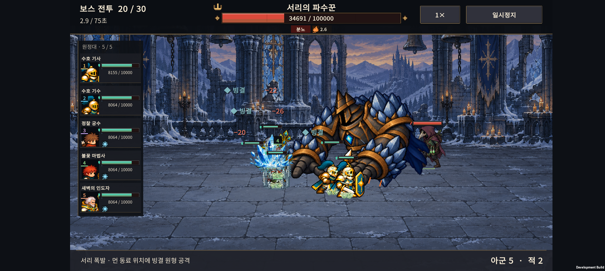

IGNIS: ASHEN OATH / 2026-11-07 / v0.71
공격은 구분하고, 숫자는 덜어내기.
무기별 명중·원거리 투사체·보스 착탄을 보강하고, 전장을 덮던 반복 숫자를 줄였습니다.
효과 직접 보기상세 변경 기록Buddy2 결과
+ / − 숫자는 왜 많았나
회복량(+), 피해량(−), 보호막(◇)을 매번 표시하면서 일반 공격·지속 피해·범위 회복이 겹쳤습니다. 체력바와 이펙트로 알 수 있는 반복 수치를 덜어냈습니다.
| 정보 | 현재 표시 |
|---|
| 일반 공격 / 화상 / 독 틱 | 숫자 숨김. 체력바·타격·상태 아이콘 유지. |
| 스킬 피해 | 같은 대상의 0.55초 이내 피해를 한 숫자로 합산. |
| 회복 / 보호막 | 체력·보호막 바와 효과로 확인. 낮은 체력에서 큰 회복에만 숫자 표시. |
| 빙결 / 중독 | 문구 유지, 연속 재표시 간격 제한. |
| 동시 문구 | 최대 24개 → 8개. 상태 알림 우선. |
무기마다 다른 접촉
검은 절삭, 망치·방패는 둔탁한 충격, 창은 찌르기, 야수는 발톱을 사용합니다. 화살·화염·얼음·성광·독성·돌 투사체를 구분하고 실제 피해 이벤트에서 명중 효과를 재생합니다.
보스의 기존 공격 범위·브레스 경로는 유지하며 그 안에 예고 입자와 착탄 파편을 더했습니다. 16종 신규 시트, 총 128프레임을 캐시해서 사용합니다.
실제 Buddy2 전투
동작을 오래 보기 위해 체력을 높인 임시 QA 전투입니다. 난이도·출시 성능 벤치마크가 아닙니다.

검증 기록
- 신규 16개 시트 / 128프레임의 투명 경계·임포트 검사.
- 30형태 무기 분류, 실제 접촉 연결, 보호막 분리, 일시정지와 효과 상한.
- 120개 공격 타이밍 회귀 사례 및 보스 피격·지속 피해 검사.
- 숫자 합산 정확성, 일반/지속 피해 숨김, 상태 우선과 최대 8개 검사.
- Buddy2: 여섯 보스와 저자극 반복, 총 7개 사례 완료. 실제 동시 문구 최고치는 3~7개. 저장·설정 복원 확인.
게임 수치·판정·기존 원정 저장 형식은 변경하지 않았습니다. 왼쪽 아군 목록의 공격 깜빡임은 제거된 상태입니다.
PixelFX MIT 소스의 고정 버전을 사용했습니다. 라이선스·출처·재생성 절차는 상세 변경 기록에 있습니다.